토목기사 (2016-10-01 기출문제)
1과목: 응용역학
1. 반지름이 r인 중실축(中實軸)과, 바깥 반지름이 r이고 안쪽 반지름이 0.6r인 중공충(中空軸)이 동일 크기의 비틀림 모멘트를 받고 있다면 중실축(中實軸):중공충(中空軸)의 최대 전단응력비는?
- 1:1.28
- 1:1.24
- 1:1.20
- 1:1.15
(정답률: 76%)

2. 그림과 같은 캔틸레버보에서 자유단 A의 처짐은? (단, EI는 일정함)
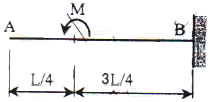
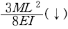
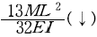
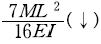
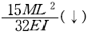
(정답률: 43%)
3. 그림에서 직사각형의 도심축에 대한 단면상승 모멘트 Ixy의 크기는?
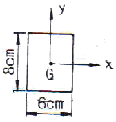
- 576cm4
- 256cm4
- 142cm4
- 0cm4
(정답률: 72%)
4. 길이가 3m이고 가로 20cm, 세로30cm인 직사각형 단면의 기둥이 있다. 좌굴응력을 구하기 위한 이 기둥의 세장비는?
- 34.6
- 43.3
- 52.0
- 40.7
(정답률: 62%)
5. 다음의 단순보에서 A점의 반력이 B점의 반력의 3배가 되기 위한 거리는 x는 얼마인가?
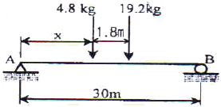
- 3.75m
- 5.04m
- 6.06m
- 6.66m
(정답률: 65%)
6. 아래 그림과 같은 라멘구조물에서 A점의 반력 는?
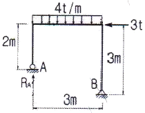
- 3t
- 4.5t
- 6t
- 9t
(정답률: 66%)
7. 그림과 같은 트러스에서 A점에 연직하중 P가 작용할 때 A점의 연직처짐은? (단, 부재의 축 강도는 모두 EA이고, 부재의 길이는 AB=3ℓ, AC=5ℓ이며, B와 C의 거리는 4ℓ이다.)
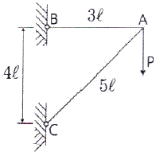
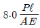
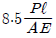
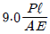
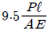
(정답률: 64%)
8. 다음 구조물의 변형에너지의 크기는? (단, E, I, A는 일정하다.)
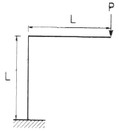
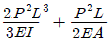
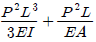
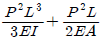
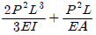
(정답률: 47%)
9. 균질한 단면봉이 그림과 같이 P1, P2, P3의 하중을 B, C, D점에서 받고 있다. 각 구간의 거리 a=1.0m, b=0.5m, c=0.5m이고, P2=10t, P3=4t의 하중이 작용할 때 D점에서의 수직방향 변위가 일어나지 않기 위한 하중 P1은?
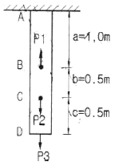
- 21t
- 22t
- 23t
- 24t
(정답률: 58%)
10. 그림의 보에서 지점 B의 휨모멘트는? (단, EI는 일정하다.)
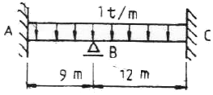
- -6.75t∙m
- -9.75t∙m
- -12t∙m
- -16.5t∙m
(정답률: 49%)
11. 그림의 트러스에서 a부재의 부재력은?
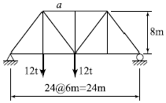
- 13.5t(인장)
- 17.5t(인장)
- 13.5t(압축)
- 17.5r(압축)
(정답률: 65%)
12. 다음의 그림에 있는 연속보의 B점에서의 반력을 구하면? ( E=2.1×106kg/cm2, I=1.6×104cm4))
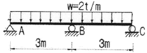
- 6.3t
- 7.5t
- 9.7t
- 10.1t
(정답률: 66%)
13. 다음 단순보의 지점 B에 모멘트 M 가 작용할 때 지점 A에서의 처짐각(θA)은? (단, EI는 일정하다.)
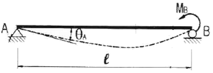
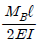
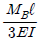
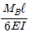
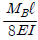
(정답률: 57%)
14. 다음 중에서 정(+)과 부(-)의 값을 모두 갖는 것은?
- 단면계수
- 단면2차모멘트
- 단면상승모멘트
- 단면 회전반지름
(정답률: 77%)
15. 그림과 같이 두 개의 나무판이 못으로 조림된 T형 보에서 단면에 작용하는 전단력 (V)이 155kg이고 한 개의 못이 전단력 70kg을 전달할 경우 못의 허용 최대 간격은 약 얼마인가? (단, 1135.0cm)(오류 신고가 접수된 문제입니다. 반드시 정답과 해설을 확인하시기 바랍니다.)
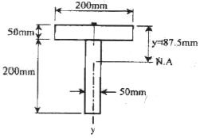
- 7.5cm
- 8.2cm
- 8.9cm
- 9.7cm
(정답률: 36%)
16. 다음 그림과 같은 단순보에 이동하중이 작용하는 경우 절대 최대 휨모멘트는 얼마인가?
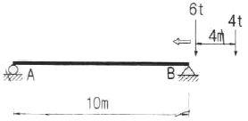
- 17.64t∙m
- 16.72t∙m
- 16.20t∙m
- 12.51t∙m
(정답률: 64%)
17. 바닥은 고정, 상단은 자유로운 기둥의 좌굴 형상이 그림과 같을 때 임계하중은 얼마인가?
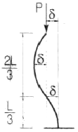
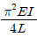
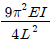
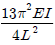
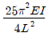
(정답률: 66%)
18. 아래의 표에서 설명하는 것은?
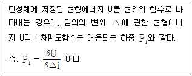
- Castigliano의 제1정리
- Castigliano의 제2정리
- 가상일의 원리
- 공액보법
(정답률: 70%)
19. 다음 그림과 같은 r=4m인 3힌지 원호아치에서 지점 A에서 2m 떨어진 E점의 휨모멘트의 크기는 약 얼마인가?
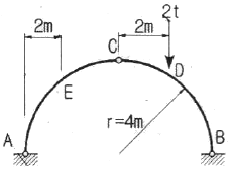
- 0.613t∙m
- 0.732t∙m
- 0.827t∙m
- 0.916t∙m
(정답률: 62%)
20. 그림의 AC, BC 에 작용하는 힘 FAC, FBC 의 크기는?
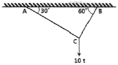
- FAC=10t, FBC=8.66t
- FAC=8.66t, FBC=5t
- FAC=5t, FBC=8.66t
- FAC=5t, FBC=17.32t
(정답률: 66%)
2과목: 측량학
21. 초점거리 20cm인 카메라로 경사 30°로 촬영된 사진 상에서 연지점 m과 등각점 j와의 거리는?
- 33.6mm
- 43.6mm
- 53.6mm
- 63.66mm
(정답률: 37%)
22. 하천측량에 대한 설명 중 옳지 않은 것은?
- 하천측량시 처음에 할 일은 도상조사로서 유로상황, 지역면적, 지형지물, 토지이용 상황 등을 조사하여야 한다.
- 심천측량은 하천의 수심 및 유수부분의 하저사항을 조사하고 횡단면도를 제작하는 측량을 말한다.
- 하천측량에서 수준측량을 할 때의 거리표는 하천의 중심에 직각방향으로 설치한다.
- 수위관측소의 위치는 지천의 합류점 및 분류점으로서 수위의 변화가 뚜렷한 곳이 적당하다.
(정답률: 70%)
23. 등고선의 성질에 대한 설명으로 옳지 않은 것은?
- 동일 등고선산의 모든 점은 기준면으로부터 같은 높이에 있다.
- 지표면의 경사가 같을 때는 등고선의 간격은 같고 평행하다.
- 등고선은 도면 내 또는 밖에서 반드시 폐합한다.
- 높이가 다른 두 등고선은 절대로 교차하지 않는다.
(정답률: 76%)
24. 수준측량에 관한 설명으로 옳은 것은?
- 수준측량에서는 빛의 굴절에 의하여 물체가 실제로 위치하고 있는 곳보다 더욱 낮게 보인다.
- 삼각수준측량은 토털스테이션을 사용하여 연직각과 거리를 동시에 관측하므로 레벨측량보다 정확도가 높다.
- 수평한 시준선을 얻기 위해서는 시준선과 기포관 축은 서로 나란하여야 한다.
- 수준측량의 시준 오차를 줄이기 위하여 기준점과의 구심 작업에 신중을 기울여야 한다.
(정답률: 49%)
25. 수준측량에서 발새할 수 있는 정오차에 해당하는 것은?
- 표척을 잘못 뽑아 발생되는 읽음오차
- 광선의 굴절에 의한 오차
- 관측자의 시력 불완전에 의한 오차
- 태양의 광선, 바람, 습도 및 온도의 순간변화에 의해 발생되는 오차
(정답률: 56%)
26. 완화곡선에 대한 설명으로 틀린 것은?
- 단위 클로소이드란 매개 변수 A가 1인, 즉 R×L=1의 관계에 있는 클로소이드다.
- 완화곡선의 접선은 시점에서 직선에, 종점에서 원호에 접한다.
- 클로소이드의 형식 중 S형은 복심곡선 사이에 클로소이드를 삽입한 것이다.
- 캔트(Cant)는 원심력 때문에 발생하는 불리한 점을 제거하기 위해 두는 편경사이다.
(정답률: 52%)
27. 그림과 같은 도로 횡단면도의 단면적은? (단, O을 원점으로 하는 좌표(x, y)의 단위:[m])
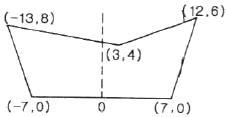
- 94m2
- 98m2
- 102m2
- 106m2
(정답률: 57%)
28. 지리정보시스템(GIS) 데이터의 형식 중에서 벡터형식의 객체자료 유형이 아닌 것은?
- 격자(Call)
- 점(Point)
- 선(Line)
- 면(Polygon)
(정답률: 65%)
29. 평탄지를 1:25000으로 촬영한 수직사진이 있다. 이때의 초점거리 10cm, 사진의 크기 23cm×23cm, 종중복도 60%, 횡중복도 30% 일 때 기선고도비는?
- 0.92
- 1.09
- 1.21
- 1.43
(정답률: 40%)
30. 대단위 신도시를 건설하기 위한 넓은 지형의 정지 공사에서 토량을 계산하고자 할 때 가장 적당한 방법은?
- 점고법
- 비례중앙법
- 양단면 평균법
- 각주공식에 의한 방법
(정답률: 65%)
31. 표준길이보다 5mm가 늘어나 있는 50m 강철줄자로 250m×250m인 정사각형 토지를 측량하였다면 이 토지의 실제면적은?
- 62487.50m2
- 62493.75m2
- 62506.25m2
- 62512.50m2
(정답률: 54%)
32. 정확도 1/5000을 요구하는 50m 거리 측량에서 경사거리를 측정하여도 허용되는 두 점간의 최대 높이차는?
- 1.0m
- 1.5m
- 2.0m
- 2.5m
(정답률: 43%)
33. A와 B의 좌표가 다음과 같을 때 측선 AB의 방위각은?
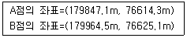
- 5° 23' 15“
- 185° 15' 23“
- 185° 23' 15“
- 5° 15' 22“
(정답률: 47%)
34. 어느 각을 관측한 결과가 다음과 같을 때, 최화값은? (단, 괄호 안의 숫자는 경중률)(오류 신고가 접수된 문제입니다. 반드시 정답과 해설을 확인하시기 바랍니다.)
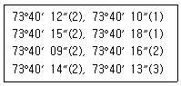
- 73°40' 10.2“
- 73°40' 11.6“
- 73°40' 13.7“
- 73°40' 15.1“
(정답률: 62%)
35. 단곡선 설치에 있어서 교각 I=60°, 반지름 R=200m, 곡선의 시점 B.C.=No.8+15m일 때 종단현에 대한 편각은? (단, 중심말뚝의 간격은 20m 이다.)
- 0°38' 10“
- 0°42' 58“
- 1°16' 20“
- 2°51' 53“
(정답률: 42%)
36. 지형을 표시하는 방법 중에서 짧은 선으로 지표의 기복을 나타내는 방법은?
- 점고법
- 영선법
- 단채법
- 등고선법
(정답률: 66%)
37. 수심이 H인 하천의 유속을 3점법에 의해 관측할 때, 관측 위치로 옳은 것은?
- 수면에서 0.1H, 0.5H, 0.9H가 되는 지점
- 수면에서 0.2H, 0.6H, 0.8H가 되는 지점
- 수면에서 0.3H, 0.5H, 0.7H가 되는 지점
- 수면에서 0.4H, 0.5H, 0.9H가 되는 지점
(정답률: 75%)
38. GNSS 측량에 대한 설명으로 옳지 않은 것은?
- 3차원 공간 계측이 가능하다.
- 기상의 영향을 거의 받지 않으며 야간에도 측량이 가능하다.
- Bessel 타원체를 기준으로 경위도 좌표를 수집하기 때문에 좌표정밀도가 높다.
- 기선 결정의 경우 두 측점 간의 시통에 관계가 없다.
(정답률: 49%)
39. 완화곡선 중 클로소이트에 대한 설명으로 틀린 것은?
- 클로소이드는 나선의 일종이다.
- 매개변수를 바꾸면 다른 무수한 클로소이드를 만들 수 있다.
- 모든 클로소이드는 닮은 꼴이다.
- 클로소이드 요소는 모두 길이의 단위를 갖는다.
(정답률: 69%)
40. 삼각측량을 위한 기준점성과표에 기록되는 내용이 아닌 것은?
- 점번호
- 천문경위도
- 평면직각좌표 및 표고
- 도엽명칭
(정답률: 63%)
3과목: 수리학 및 수문학
41. 직경 10cm인 연직관 속에 높이 1m만큼 모래가 들어있다. 모래면 위의 수위를 10cm로 일정하게 유지시켰더니 투수량 Q=4L/hr 이었다. 이 때 모래의 투수계수 k는?
- 0.4m/hr
- 0.5m/hr
- 3.8m/hr
- 5.1m/hr
(정답률: 45%)
42. 개수로의 흐름에 대한 설명으로 옳지 않은 것은?
- 사류(supercritical flow)에서는 수면변동이 일어날때 상류(上流)로 전파될 수 없다.
- 상류(subcritical flow)일 때는 Froude 수가 1보다 크다.
- 수로경사가 한계경사보다 클 때 사류(supercritical flow)가 된다.
- Reynolds 수가 500보다 커지면 난류(turbulent flow)가 된다.
(정답률: 63%)
43. 반지름 (oP)이 6m이고, θ'=30°인 수문이 그림과 같이 설치되었을 때, 수문에 작용하는 전수압(저항력)은?
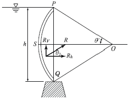
- 185.5kN/m
- 179.5kN/m
- 169.5kN/m
- 159.5kN/m
(정답률: 45%)
44. 유효 강수량과 가장 관계가 깊은 유출량은?
- 지표하 유출량
- 직접 유출량
- 지표면 유출량
- 기저 유출량
(정답률: 66%)
45. 강우강도 공식에 관한 설명으로 틀린 것은?
- 강우강도 (I)와 강우지속시간(D)과의 관계로서 Talbot, Shermam, Japanese형의 경험공식에 의해 표현될 수 있다.
- 강우강도공식은 자기우량계의 유량자료로부터 결정되며, 지역에 무관하게 적용 가능하다.
- 도시지역의 우수거, 고속도로 암거 등의 설계시에 기본자료로서 널리 이용된다.
- 강우강도가 커질수록 강우가 계속되는 시간은 일반적으로 작아지는 반비례관계이다.
(정답률: 56%)
46. 하천의 임의 단면에 교량을 설치하고자 한다. 원통형 교각 상류(전면)에 2m/s의 유속으로 물이 흘허간다면 교각에 가해지는 항력은? (단, 수심은 4m, 교각의 직경은 2m, 항력계수는 1.5이다.)
- 16kN
- 24kN
- 43kN
- 62kN
(정답률: 49%)
47. 원형단면의 수맥이 그림과 같이 곡면을 따라 유량 0.018m3/s가 흐를 때 x방향의 분력은? (단, 관내의 유석은 9.8m/s, 마찰은 무시한다)
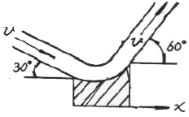
- -18.25N
- -37.83N
- -64.56N
- 17.64N
(정답률: 34%)
48. 강수량 자료를 분석하는 방법 중 이중누가해석(double mass analysis)에 대한 설명으로 옳은 것은?
- 강수량 자료의 일관성을 검증하기 위하여 이용한다.
- 강수의 지속기간을 알기 위하여 이용한다.
- 평균 강수량을 계산하기 위하여 이용한다.
- 결측자료를 보완하기 위하여 이용한다.
(정답률: 70%)
49. 지름 D인 원관에 물이 반만 차서 흐를 때 경심은?
- D/4
- D/3
- D/2
- D/5
(정답률: 69%)
50. SCS방법(NRCS 유출곡선 번호방법)으로 초과강우량을 산정하여 유출량을 계산할 때에 대한 설명으로 옳지 않은 것은?
- 유역의 토지이용형태는 유효우량의 크기에 영향을 미친다.
- 유출곡선지수(runoff curve nunber)는 총 우량으로부터 유효우량의 잠재력을 표시하는 지수이다.
- 투수성 지역의 유출곡선지수는 불투수성 지역의 유출곡선지수보다 큰 값을 갖는다.
- 선행토양함수조건(antecedent soil moisture condition)은 1년을 성수기와 비성수기로 나누어 각 경우에 대하여 3가지 조건으로 구분하고 있다.
(정답률: 48%)
51. 그림에서 A와 B의 압력차는? ( 단, 수은의 비중=13.50)
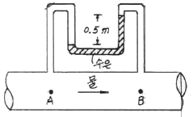
- 32.85kN/m2
- 57.50kN/m2
- 61.25kN/m2
- 78.94kN/m2
(정답률: 57%)
52. xy 평면이 수면에 나란하고, 질량력의 x, y ,z축 방향성분을 X, Y , Z 라 할 때, 정지평형상태에 있는 액체내부에 미소 육면체의 부피를 dx, dy, dz라 하면 등압면(等壓面)의 방정식은?
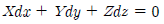
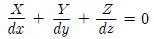
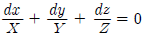
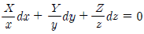
(정답률: 58%)
53. 오리피스에서 Cc를 수축계수, Cv를 유속계수라 할 때 실제유량과 이론유량과의 비 (C)는?
- C=Cc
- C=Cv
- C=Cc / Cv
- C=Cc∙Cv
(정답률: 63%)
54. 유역내의 DAD해석과 관련된 항목으로 옳게 짝지어 진 것은?
- 우량, 유역면적, 강우지속시간
- 우량, 유출계수, 유역면적
- 유량, 유역면적, 강우강도
- 우량, 수위, 유량
(정답률: 64%)
55. 사각형 개수로 단면에서 한계수심(hc)과 비에너지(he)의 관계로 옳은 것은?
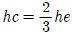
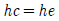
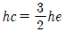
(정답률: 62%)
56. 매끈한 원관 속으로 완전발달 상태의 물이 흐를 때 단면의 전단응려은?
- 관의 중심에서 0 이고 관 벽에서 가장 크다.
- 관 벽에서 변화가 없고 관의 중심에서 가장 큰 직선 변화를 한다.
- 단면의 어디서나 일정하다.
- 유속분포와 동일하게 포물선형으로 변화한다.
(정답률: 54%)
57. 폭 9m의 직사각형수로에 16.2m3/s의 유량이 92cm의 수심으로 흐르고 있다. 장파의 전파속도 C와 비에너지 E는? (단, 에너지보정계수 α=1.0)
- C=2.0m/s, E=1.015m
- C=2.0m/s, E=1.115m
- C=3.0m/s, E=1.015m
- C=3.0m/s, E=1.115m
(정답률: 39%)
58. 폭 35cm인 직사각형 위어(weir)의 유량을 측정하였더니 0.03m3/s 이었다. 월류수심의 측정에 1mm의 오차가 생겼다면, 유량에 발생하는 오차(%)는? (단, 유량계산은 프란시스(Francis)공식을 사용하되 월류 시 단면수축은 없는 것으로 가정한다.)
- 1.84%
- 1.67%
- 1.50%
- 1.16%
(정답률: 39%)
59. 관수로에서의 미소 손실(Minor Loss)은?
- 위치수두에 비례한다.
- 압력수두에 비례한다.
- 속도수두에 비례한다.
- 레이놀드수의 제곱에 반비례한다.
(정답률: 56%)
60. 동해의 일본 측으로부터 300km 파장의 지진해일이 발생하여 수심 3000m의 동해를 가로질러 2000km 떨어진 우리나라 동해안에 도달한다고 할 때, 걸리는 시간은? (단, 파속 C=√(gh) , 중력가속도는 9.8m/s2 이고 수심은 일정한 것으로 가정)
- 약 150분
- 약 194분
- 약 274분
- 약 332분
(정답률: 43%)
4과목: 철근콘크리트 및 강구조
61. 그림과 같이 복철근 직사각형 단면에서 응력 사각형의 깊이 a의 값은 얼마인가? (단, fck=24MPa, fy=350MPa, AS=5730mm2, AS'=1980mm2)
- 227.2mm
- 199.6mm
- 217.4mm
- 183.8mm
(정답률: 62%)
62. 연속보 또는 1방향 슬래브의 철근콘크리트 구조를 해석하고자 할 때 근사해법을 적용할 수 있는 조건에 대한 설명으로 틀린 것은?
- 부재의 단면 크기가 일정한 경우
- 인접 2경간의 차이가 짧은 경간의 50%이하인 경우
- 등분포 하중이 작용하는 경우
- 활하중이 고정하중의 3배를 초과하지 않는 경우
(정답률: 45%)
63. 압축 이형철근의 겹침이음길이에 대한 다음 설명으로 틀린 것은? (단, db는 철근의 공칭지름)
- 겹침이음길이는 300mm 이상이어야 한다.
- 철근의 항복강도 (fy )가 400MPa 이하인 경우 겹침이음길이는 0.072fydb보다 길 필요가 없다.
- 서로 다른 크기의 철근을 압축부에서 겹침이음하는 경우, 이음길이는 크기가 큰 철근의 정착길이와 크기가 작은 철근의 겹침이음길이 중 큰 값 이상이어야 한다.
- 압축철근의 겹침이음길이는 인장철근의 겹침이음 길이보다 길어야 한다.
(정답률: 34%)
64. 옹벽의 구조해석에 대한 설명으로 잘못된 것은?
- 부벽식 옹벽 저판은 정밀한 해석이 사용되지 않는 한, 부벽 간의 거리를 경간으로 가정한 고정보 또는 연속보로 설계할 수 있다.
- 저판의 뒷굽판은 정확한 방법이 사용되지 않는 한, 뒷굽판 상부에 재하되는 모든 하중을 지지하도록 설계하여야 한다.
- 캔틸레버식 옹벽의 전면벽은 저판에 지지된 캔틸레버로 설계할 수 있다.
- 뒷부벽식 옹벽의 뒷부벽은 직사각형보로 설계하여야 한다.
(정답률: 70%)
65. 그림과 같은 캔틸레버보에 활하중 WL=25kN/m이 작용할 때 위험단면에서 전단철근이 부담해야 할 전단력은? (단, 콘크리트의 단위무게=25kN/m3, fck=24MPa, fy=300MPa이고, 하중계수와 하중조합을 고려하시오)
- 69.5kN
- 73.7kN
- 84.8kN
- 92.7kN
(정답률: 40%)
66. 그림과 같은 용접 이음에서 이음부의 응력은 얼마인가?
- 140MPa
- 152MPa
- 168MPa
- 180MPa
(정답률: 66%)
67. b=300mm, d=450mm, As=3-D25=1520mm2가 1열로 배치된 단철근 직사각형 보의 설계 휨강도(øMn)은 약 얼마인가? (단, fck=28MPa, fy =400MPa 이고 과소철근보이다.)
- 192.4kN∙m
- 198.2kN∙m
- 204.7kN∙m
- 210.5kN∙m
(정답률: 53%)
68. 강도설계법에 의해서 전단 철근을 사용하지 않고 계소 하중에 의한 전단력 Vu =50kN을 지지하려면 직사각형 단면보의 최소면적(bwd)은 약 얼마인가? (단, fck =28MPa, 최소 전단철근도 사용하지 않은 경우)
- 151190mm2
- 123530mm2
- 97840mm2
- 49320mm2
(정답률: 56%)
69. 프리스트레스트 콘크리트에 대한 설명 중 잘못 된 것은?
- 프리스트레스트 콘크리트는 외력에 의하여 일어나는 응력을 소정의 한도까지 상쇄할 수 있도록 미리 인공적으로 내력을 가한 콘크리트를 말한다.
- 프리스트레스트 콘크리트 부재는 설계하중 이상으로 약간의 균열이 발생하더라도 하중을 제거하면 균열이 폐합되는 복원성이 우수하다.
- 프리스트레스트를 가하는 방법으로 프리텐션방식과 포스트텐션 방식이 있다.
- 프리스트레스트 콘크리트 부재는 균열이 발생하지 않도록 설계되기 때문에 내구성(耐久性) 및 수밀성(水密性)이 좋으며 내화성(耐火性)도 우수하다.
(정답률: 66%)
70. 지름 450mm인 원형 단면을 갖는 중심축하중을 받는 나선 철근 기둥에서 강도 설계법에 의한 축방향 설계강도(øPn)는 얼마인가? (단, 이 기둥은 단주이고, fck=27MPa, fy=350MPa, Ast=8-D22=3096mm2, 압축지배단면이다.)
- 1166kN
- 1299kN
- 2425kN
- 2774kN
(정답률: 53%)
71. 처짐을 계산하지 않은 경우 단순지지된 보의 최소 두께(h)로 옳은 것은? (단, 보통콘크리트(mc=2300kg/m3) 및 fy =300MPa인 철근을 사용한 부재의 길이가 10m인 보)
- 429mm
- 500mm
- 537mm
- 625mm
(정답률: 51%)
72. 전단철근이 부담하는 전단력 Vs =150kN일 때, 수직스터럽으로 전단보강을 하는 경우 최대 배치간격은 얼마 이하인가? (단, fck=280MPa, 전단철근 1개 단면적=125mm2, 횡방향 철근의 설계기준항복강도(fyt)=400MPa, bw =300mm, d=500mm)
- 600mm
- 333mm
- 250mm
- 197mm
(정답률: 41%)
73. 그림과 같은 단면의 균열모멘트 Mcr 은? (단, fck=24MPa, fy =400MPa)
- 30.8kN·m
- 38.6kN·m
- 28.2kN·m
- 22.4kN·m
(정답률: 60%)
74. 주어진 T형 단면에서 전단에 대해 위험단면에서 Vud/Mu=0.28 이었다. 휨철근 인장강도의 40% 이상의 유효 프리스트레스트 힘이 작용할 때 콘크리트의 공칭전단강도 (Vc)는 얼마인가? (단, fck=45MPa, Vu :계수전단력, Mu :계수휨모멘트, d:앞축측 표면에서 긴장재 도심까지의 거리)
- 185.7kN
- 230.5kN
- 321.7kN
- 462.7kN
(정답률: 29%)
75. 설계기준 항복강도가 400MPa인 이형철근을 사용한 철근콘크리트 구조물에서 피로에 대한 안전성을 검토하지 않아도 되는 철근 응력범위로 옳은 것은? (단, 충격을 포함한 사용 활하중에 의한 철근의 응력범위)
- 150MPa
- 170MPa
- 180MPa
- 200MPa
(정답률: 32%)
76. 다음 그림과 같이 직경 25mm의 구멍이 있는 판(plate)에서 인장응력 검토를 위한 순폭은 약 얼마인가?
- 160.4mm
- 150mm
- 145.8mm
- 130mm
(정답률: 51%)
77. 아래 그림과 같은 PSC보에 활하중(wl) 18kN/m이 작용하고 있을 때 보의 중앙단면 상연에서 콘크리트 응력은? (단, 프리스트레스 힘(P)은 3375kN이고, 콘크리트의 단위중량은 25kN/m3을 적용하여 자중을 산정하며, 하중계수와 하중조합은 고려하지 않는다.)
- 18.75MPa
- 23.63MPa
- 27.25MPa
- 32.42MPa
(정답률: 41%)
78. 그림의 단면을 갖는 저보강 PSC보의 설계휨강도(øMn)는 얼마인가? (단, 긴장재 단면적 Ap=600mm2, 긴장재 인장응력 fps=1500MPa, 콘크리트 설계기준강도 fck=35MPa)
- 187.5kN·m
- 225.3kN·m
- 267.4kN·m
- 293.1kN·m
(정답률: 47%)
79. 철근콘크리트보에 배치하는 복부철근에 대한 설명으로 틀린 것은?
- 복부철근은 사인장응력에 대하여 배치하는 철근이다.
- 복부철근은 휨 모멘트가 가장 크게 작용하는 곳에 배치하는 철근이다.
- 굽힘철근은 복부철근의 한 종류이다.
- 스트럽은 복부철근의 한 종류이다.
(정답률: 41%)
80. 강도설계법에서 휨부재의 등가직사각형 압축응력 분포의 깊이 α=β1c로서 구할 수 있다. 이 때 fck가 60MPa인 고강도 콘크리트에서 β1의 값은?
- 0.85
- 0.734
- 0.65
- 0.626
(정답률: 54%)
5과목: 토질 및 기초
81. 다음은 정규압밀점토의 삼축압축 시험결과를 나타낸 것이다. 파괴시의 전단응력 τ 와 σ를 구하면?
- τ = 1.73t/m2, σ = 2.50t/m2
- τ = 1.41t/m2, σ = 3.00t/m2
- τ = 1.41t/m2, σ = 2.50t/m2
- τ = 1.73t/m2, σ = 3.00t/m2
(정답률: 56%)
82. 그림과 같은 조건에서 분사현상에 대한 안전율을 구하면? (단, 모래의 =2.0t/m3이다.)
- 1.0
- 2.0
- 2.5
- 3.0
(정답률: 50%)
83. 3층 구조로 구조결합 사이에 치환성 양이온이 있어 활성이 크고 시트 사이에 물이 들어가 팽창 수축이 크고 공학적 안정성은 약한 점토 광물은?
- Kaolinite
- illite
- momtmorillonite
- Sand
(정답률: 47%)
84. 다음 중 일시적인 지반 개량 공법에 속하는 것은?
- 다짐 모래말뚝 공법
- 약액주입 공법
- 프리로딩 공법
- 동결공법
(정답률: 58%)
85. 강도정수가 c=0, ø=40°인 사질토 지반에서 Rankine 이론에 의한 수동토압계수는 주동토압계수의 몇 배인가?
- 4.6
- 9.0
- 12.3
- 21.1
(정답률: 49%)
86. 그림과 같이 6m 두께의 모래층 밑에 2m 두께의 점토층이 존재한다. 지하수면은 지표아래 2m지점에 존재한다. 이때, 지표면에 ΔP=5.0t/m2의 등분포하중이 작용하여 상당한 시간이 경과한 후, 점토층의 중간높이 A점에 피에조미터를 세워 수두를 측정한 결과, h=4.0m로 나타났다면 A점의 압밀도는?
- 20%
- 30%
- 50%
- 80%
(정답률: 36%)
87. 다짐에 대한 다음 설명 중 옳지 않은 것은?
- 세립토의 비율이 클수록 최적함수비는 증가한다.
- 세립토의 비율이 클수록 최대건조 단위중량은 증가한다.
- 다짐에너지가 클수록 최적함수비는 감소한다.
- 최대건조 단위중량은 사질토에서 크고 점성토에서 작다.
(정답률: 52%)
88. 어느 지반 30cm×30cm 재하판을 이용하여 평판재하시험을 한 결과, 항복하중이 5t, 극한하중이 9t이었다. 이 지반의 허용지지력은?
- 55.6t/m2
- 27.8t/m2
- 100t/m2
- 33.3t/m2
(정답률: 38%)
89. 암반층 위에 5m 두께의 토층이 경사 15°의 자연사면으로 되어 있다. 이 토층은 c=1.5t/m2, ø=30°, =1.8t/m3이고, 지하수면은 토층의 지표면과 일치하고 침투는 경사면과 대략 평행이다. 이 때의 안전율은?
- 0.8
- 1.1
- 1.6
- 2.0
(정답률: 40%)
90. 연약 점토층을 관통하여 철근콘크리트 파일을 박았을 때 부마찰력(Negative friction)은? (단, 지반의 일축압축강도 qu=2t/m2, 파일직경 D=50cm, 관입깊이 ℓ=10m 이다.)
- 15.71t
- 18.53t
- 20.82t
- 24.2t
(정답률: 45%)
91. 4m×4m 크기인 정사각형 기초를 내부마찰각 ø=20°, 점착력 c=3t/m2인 지반에 설치하였다. 흙의 단위중량()=1.9t/m3이고 안전율을 3으로 할 때 기초의 허용하중을 Terzaghi지지력공식으로 구하면? (단, 기초의 깊이는 1m이고, 전반전단파괴가 발생한다고 가정하며, Nc=17.69, Nq=7.44, =4.97 이다.)
- 478t
- 524t
- 567t
- 621t
(정답률: 52%)
92. 어떤 퇴적층에서 수평방향의 투수계수는 4.0×10-4cm/sec 이고, 수직방향의 투수계수는 3.0×10-4cm/sec 이다. 이 흙을 등방성으로 생각할 때, 등가의 평균투수계수는 얼마인가?
- 3.46×10-4cm/sec
- 5.0×10-4cm/sec
- 6.0×10-4cm/sec
- 6.93×10-4cm/sec
(정답률: 56%)
93. 직접전단 시험을 한 결과 수직응력이 12kg/cm2일때 전단저항이 5kg/cm2, 또 수직응력이 24kg/cm2일때 전단저항이 7kg/cm2이었다. 수직응력이 30kg/cm2 일 때의전단저항은 약 얼마인가?
- 6kg/cm2
- 8kg/cm2
- 10kg/cm2
- 12kg/cm2
(정답률: 52%)
94. 크기가 1m×2m인 기초에 10t/m2의 등분포하중이 작용할 때 기초 아래 4m인 점의 압력증가는 얼마인가? (단, 2:1 분포법을 이용한다.)
- 0.67t/m2
- 0.33t/m2
- 0.22t/m2
- 0.11t/m2
(정답률: 53%)
95. 두께 5m의 점토층을 90% 압밀하는데 50일이 걸렸다. 같은 조건하에서 10m의 점토층을 90% 압밀하는데 걸리는 시간은?
- 100일
- 160일
- 200일
- 240일
(정답률: 51%)
96. 흙의 내부마찰각(ø)은 20°, 점착력(c)이 2.4t/m2이고, 단위중량()은 1.93t/m3인 사면의 경사각이 45°일 때 임계높이는 약 얼마인가? (단, 안정수 m=0.06)
- 15m
- 18m
- 21m
- 24m
(정답률: 41%)
97. 다음 현장시험 중 Sounding의 종류가 아닌 것은?
- Vane 시험
- 표준관입 시험
- 동적 원추관입 시험
- 평판재하 시험
(정답률: 56%)
98. Paper drain 설계 시 Drain paper의 폭이 10cm, 두께가 0.3cm 일 때 Drain paper의 등치환산원의 직경이 얼마이면 Sand Drain과 동등한 값으로 볼 수 있는가? (단, 형상계수 : 0.75)
- 5cm
- 8cm
- 10cm
- 15cm
(정답률: 48%)
99. 흙의 연경도(Consistency)에 관한 설명으로 틀린 것은?
- 소성지수는 점성이 클수록 크다
- 터프니스지수는 Colloid가 많은 흙일수록 값이 작다.
- 액성한계시험에서 얻어지는 유동곡선의 기울기를 유동지수라 한다.
- 액성지수와 컨시스턴시지수는 흙지반의 무르고 단단한 상태를 판정하는데 이용된다.
(정답률: 42%)
100. 암질을 나타내는 항목과 직접 관계가 없는 것은?
- N치
- RQD값
- 탄성파속도
- 균열의 간격
(정답률: 55%)
6과목: 상하수도공학
101. 다음 하수량 산정에 관한 설명 중 틀린 것은?
- 계획오수량은 생활오수량, 공장폐수량 및 지하수량으로 구분된다.
- 계획오수량 중 지하수량은 1인1일최대오수량의 10~20% 정도로 한다.
- 우수량의 산정공식 중 합리식(Q=CIA)에서는 I는 동수경사이다.
- 계획1일 최대오수량은 처리시설의 용량을 결정하는데 기초가 된다.
(정답률: 63%)
102. 정수시설 중 급속여과지에서 여과모래의 유효경이 0.45~0.7mm의 범위에 있는 경우에 대한 모래층의 표준 두께는?
- 60~70cm
- 70~90cm
- 150~200cm
- 300~450cm
(정답률: 36%)
103. 합류식 하수도에 대한 설명으로 옳은 것은?
- 관거 내의 퇴적이 적다.
- 강우시 오수의 일부가 우수와 희석되어 공공용수의 수질보전에 유리하다.
- 합류식 방류부하량 대책은 폐쇄성수역에서 특히 요구된다.
- 관거오접의 철저한 감시가 요구된다.
(정답률: 37%)
104. 정수처리 시 생성되는 발암물질인 트리할로메틴(THM)에 대한 대책으로 적합하지 않는 것은?
- 오존, 이산화염소 등의 대체 소독제 사용
- 염소소독의 강화
- 중간염소처리
- 활성탄흡착
(정답률: 47%)
1⑤. 다음 중 일반적으로 적용하는 펌프의 특성곡선에 포함되지 않는 것은?
- 토출량 - 양정 곡선
- 토출량 - 효율 곡선
- 토출량 - 축동력 곡선
- 토출량 - 회전도 곡선
(정답률: 56%)
106. 반송슬러지의 SS농도가 6000mg/L이다. MLSS농도를 2500mg/L로 유지하기 위한 슬러지 반송비는?
- 25%
- 55%
- 71%
- 100%
(정답률: 55%)
107. 상수도 취수시설 중 침사지에 관한 시설기준으로 틀린 것은?
- 침사지의 체류시간은 계획취수량의 10~20분을 표준으로 한다.
- 침사지의 유효수심은 3~4m를 표준으로 한다.
- 길이는 폭의 3~8배를 표준으로 한다.
- 침사지 내의 평균유속은 20~30cm/s로 유지한다.
(정답률: 53%)
108. 활성슬러지 공법의 설계인자가 아닌 것은?
- 먹이/미생물 비
- 고형물체류시간
- 비회전도
- 유기물질 부하
(정답률: 58%)
109. 하수량 1000m3/day, BOD 200mg/L인 하수를 250m3 유효용량의 포기조로 처리할 경우 BOD용 적부하는?
- 0.8kgBOD/m3∙day
- 1.25kgBOD/m3∙day
- 8kgBOD/m3∙day
- 12.5kgBOD/m3∙day
(정답률: 43%)
110. 배수 및 급수시설에 관한 설명으로 틀린 것은?
- 배수지의 건설에는 토압, 벽체의 균열, 지하수의 부상, 환기 등을 고려한다.
- 배수본관은 시설의 신뢰성을 높이기 위해 2개열 이상으로 한다,
- 급수관 분기지점에서 배수관의 최대정수압은 100kPa 이상으로 한다.
- 관로공사가 끝나면 시공의 적합여부를 확인하기 위하여 수압 시험 후 통수한다.
(정답률: 61%)
111. 취수탑(intake tower)의 설명으로 옳지 않은 것은?
- 일반적으로 다단수문형식의 취수구를 적당히 배치한 철근콘크리트 구조이다.
- 갈수시에도 일정 이상의 수심을 확보할 수 있으면, 연간의 수위변호가 크더라도 하천, 호소, 댐에서의 취수시설로 적합하다.
- 제내지에의 도수는 자연유하식으로 제한되기 때문에 제내지의 지형에 제약을 받는 단점이 있다.
- 특히 수심이 깊은 경우에는 철골구조의 부자(float)식의 취수탑이 사용되기도 한다.
(정답률: 48%)
112. 하수처리 재이용 기본계획에 대한 설명으로 틀린 것은?
- 하수처리 재이용수는 용도별 요구되는 수질기준을 만족하여야 한다.
- 하수처리수 재이용지역은 가급적 해당지역내의 소규모 지역 범위로 한정하여 계획한다.
- 하수처리수 재이용량은 해당지역 하수도정비 기본 계획의 물순환이용계획에서 제시된 재이용량 이상으로 계획하여야 한다.
- 하수처리 재이용수의 용도는 생활용수, 공업용수, 농업용수, 유지용수를 기본으로 계획한다.
(정답률: 53%)
113. 착수정의 체류시간 및 수심에 대한 표준으로 옳은 것은?
- 체류시간 : 1분 이상, 수힘 : 3~5m
- 체류시간 : 1분 이상, 수힘 : 10~12m
- 체류시간 : 1.5분 이상, 수힘 : 3~5m
- 체류시간 : 1.5분 이상, 수힘 : 10~12m
(정답률: 46%)
114. 상수도의 배수관 직경을 2배로 증가시키면 유량은 몇 배로 증가되는가? (단, 관은 가득차서 흐른다고 가정한다.)
- 1.4배
- 1.7배
- 2배
- 4배
(정답률: 57%)
115. 부영양화로 인한 수질변화에 대한 설명으로 옳지 않은 것은?
- COD가 증가한다.
- 탁도가 증가한다.
- 투명도가 증가한다.
- 물에 맛과 냄새를 발생시킨다.
(정답률: 65%)
116. 다음 중 하수도 시설의 목적과 가장 거리가 먼 것은?
- 하수의 배제와 이에 따른 생활환경의 개선
- 슬러지 처리 및 자원화
- 침수방지
- 지속발전 가능한 도시구축에 기여
(정답률: 38%)
117. 펌프의 분류 중 원심펌프의 특징에 대한 설명으로 옳은 것은?
- 일반적으로 효율이 높고, 적용 범위가 넓으며, 적은 유량을 가감하는 경우 소요동력이 적어도 운전에 지장이 없다.
- 양정변화에 대하여 수량의 변동이 적고 또 수량변동에 대해 동력의 변화도 적으므로 우수용 펌프 등 수위변동이 큰 곳에 적합하다.
- 회전수를 높게 할 수 있으므로, 소형으로 되며 전 양정이 4m 이하인 경우에 경제적으로 유리하다.
- 펌프와 전동기를 일체로 펌프흡입실 내에 설치하며, 유입수량이 적은 경우 및 펌프장의 크기에 제한을 받는 경우 등에 사용한다.
(정답률: 37%)
118. 급수량에 관한 설명으로 옳은 것은?
- 계획1일최대급수량은 계획1일평균급수량에 계획 첨두율을 곱해 산정한다.
- 계획1일평균급수량은 시간 최대급수량에 부하율을 곱해 산정한다.
- 시간최대급수량은 일최대급수량보다 작게 나타난다.
- 소화용수는 일최대급수량에 포함되므로 별도로 산정하지 않는다.
(정답률: 48%)
119. 유수유출량이 크고 하류시설의 유하능력이 부족한 경우에 필요한 우수저류형 시설은?
- 우수받이
- 우수조정지
- 우수침투트랜치
- 합류식하수관거월류수 처리장치
(정답률: 61%)
120. 인구 15만의 도시에 급수계획을 하려고 한다. 계획1인1일최대급수량이 400L/인∙ay이고, 보급률이 95%라면 계획1일최대급수량은?
- 57000m3/day
- 59000m3/day
- 61000m3/day
- 63000m3/day
(정답률: 62%)
중공충의 최대 전단응력은 다음과 같이 구할 수 있다.
τ_max = Tr/J
여기서, T는 비틀림 모멘트, r은 중실축의 반지름, t는 중공충의 두께, J는 극관성 모멘트이다.
중실축과 중공충이 동일 크기의 비틀림 모멘트를 받고 있으므로, T는 동일하다.
J는 중실축과 중공충의 극관성 모멘트를 합한 값이다.
J = π/2(r^4 - (0.6r)^4) + π/2(0.6r)^4 = 0.511r^4
따라서,
τ_max = Tr/J = Tr/(0.511r^4)
중실축과 중공충의 최대 전단응력비는 다음과 같다.
τ_max(중실축)/τ_max(중공충) = (Tr/(πr^3))/((Tr/(0.511r^4))(0.6r/r)) = 1.15
따라서, 정답은 "1:1.15"이다.